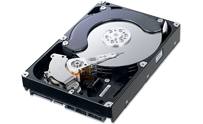
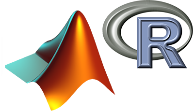

Support for statistics recording can be easily added to model components (if not built-in already), and the actual amount and form of data to be recorded to disk can be dynamically configured. OMNEST allows you to record time series, histograms, statistical summaries, and simple scalars like count or average, and you can also turn recording on/off globally, by modules or by statistics.
The result analysis tool in the OMNEST IDE allows you to browse, filter, process, and plot simulation results in various ways, and even lets you automate the process of producing the charts. Charts are also interactive and let you zoom into interesting areas. Data and graphics can be exported in various formats, ready for inclusion into your reports.

You can harness the power of your favorite statistics package (Matlab, Python/SciPy/Pandas, GNU R, and others) for a detailed evaluation of your simulation results. OMNEST records results in open file formats and provides export/import functions and extension packages to help you process them in the tool of your choice.